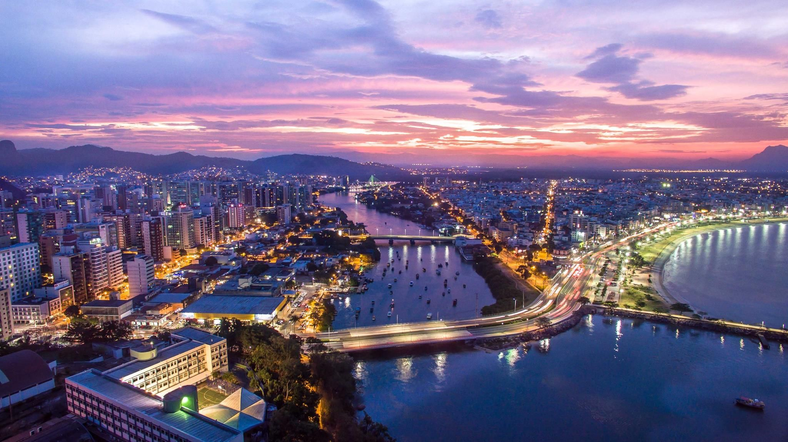

CIDADE DE VITÓRIA - ES

Vitória, a capital do Espírito Santo, é uma cidade que combina história, cultura e desenvolvimento. Fundada em 1551, a cidade é conhecida por seu porto marítimo, o Porto de Tubarão, e sua posição estratégica nas margens do Oceano Atlântico. Vitória é uma metrópole com um alto Índice de Desenvolvimento Humano Municipal (IDHM) e uma economia diversificada, com forte base no setor terciário. A cidade é um importante polo turístico e possui uma rica herança cultural, refletida em sua gastronomia e patrimônio histórico.
Regiões Administrativas
- CENTRO
- GOIABEIRAS
- JARDIM CAMBURI
- JARDIM DA PENHA
- JUCUTUQUARA
- MARUÍPE
- PRAIA DO CANTO
- SANTO ANTÔNIO
- SÃO PEDRO
Bairros de Vitória
- Aeroporto
- Andorinhas
- Antônio Honório
- Aribiri
- Bairro Da Penha
- Bairro De Lurdes
- Bairro República
- Barro Vermelho
- Bento Ferreira
- Bonfim
- Camburi
- Caratoira
- Centro
- Consolação
- De Lourdes
- Enseada Do Suá
- Enseada Sua
- Estrelinha
- Forte Sao Joao
- Fradinhos
- Goiabeiras
- Grande Vitória
- Gurigica
- Horto
- Ilha Das Caieiras
- Ilha De Santa Maria
- Ilha Do Princípe
- Ilha Monte Belo
- Ilha Príncipe
- Ilha Santa Maria
- Inhangueta
- Itararé
- Jabour
- Jardim Camburi
- Jardim da Penha
- Jardim Penha
- Jesus Nazareth
- Joana D Arc
- Jucutuquara
- Lourdes
- Maria Oritz
- Maria Ortiz
- Maruípe
- Mata da Praia
- Mata Praia
- Monte Belo
- Morada De Camburi
- Morro Algoano
- Morro De Gurgica
- Morro Do Cruzamento
- Morro Jaburú
- Nazaré
- Nazareth
- Nossa Senhora Aparecida
- Nova Palestina
- Parque Moscoso
- Pontal Camburí
- Praia Canto
- Praia Do Canto
- Praia Do Sua
- Praia Sua
- Redencao
- República
- Resistencia
- Romão
- Santa Cecília
- Santa Helena
- Santa Lúcia
- Santa Luíza
- Santa Marta
- Santa Martha
- Santa Tereza
- Santo Antônio
- Santos Dumont
- São Cristóvão
- São José
- São Pedro
- Segundo Do Lar
- Solon Borges
- Sta Lúcia
- Tabuazeiro
- Vila Rubim